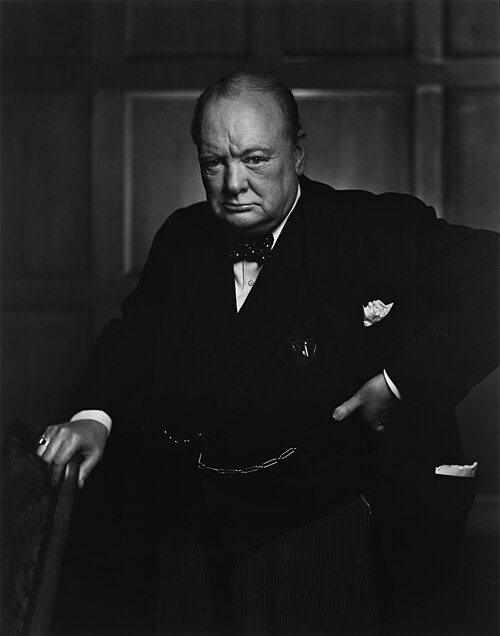
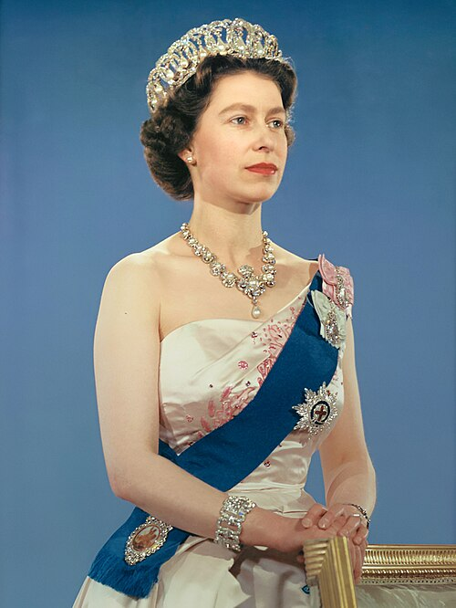
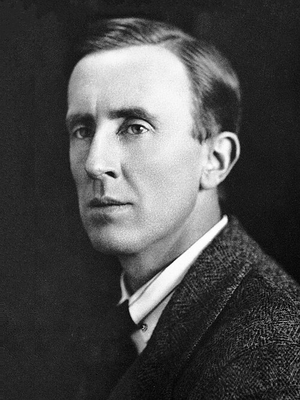
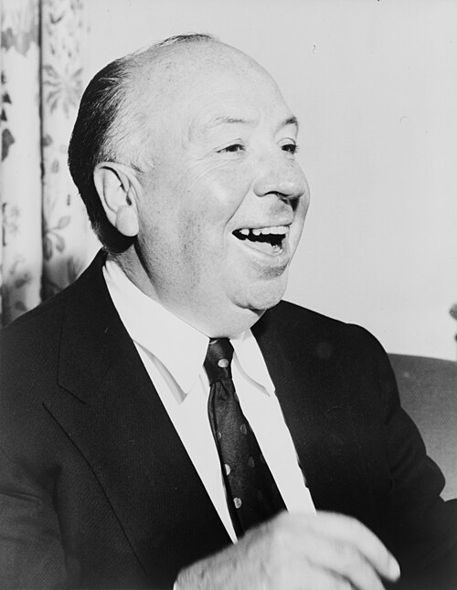
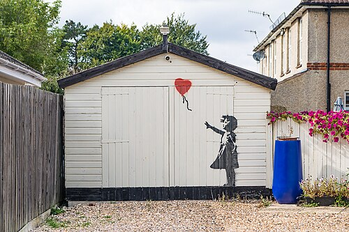
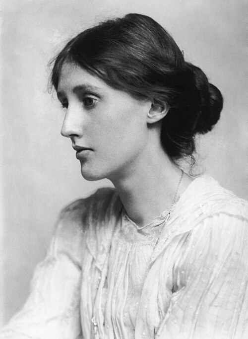
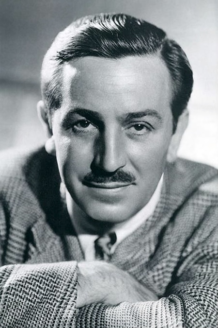
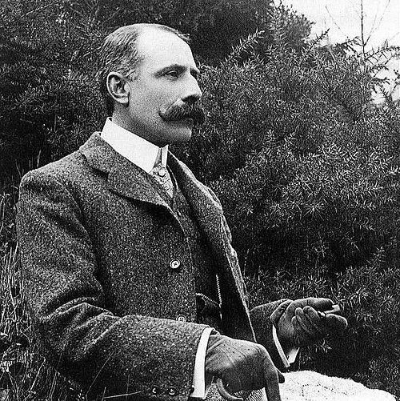

«Высшая проба» Round 2 · Задание 3 (find the line with the error) and Задание 6 (headings)
📅 12 November 2026 · Lesson 18 · trains Задания 3 and 6, plus 9 and 10 · vocabulary V13: mind & society · history era 7: the 20th and 21st centuries · culture: writers, film-makers, musicians and artists of the 20th century
Blocks checked: 0 / 0
Points today: 0 / 0
👩🏫 Teacher only · Lesson 18 plan · 90 min (tap to open / close)
The thread: the 19th century retold and three of its writers recalled → Задание 3: the demo again, the six kinds of error, which kind is it?, two Olympway proofreading texts, one timed set → the V13 mind & society words → Задание 6: main idea against detail, then two five-paragraph texts on psychology and society → the 20th century in six minutes → the 20th-century figures: cards first, then decoded, old names of countries, then a full Who is it? on the Beatles.
0–8 · Warm-up: the 19th century without the timeline (3) · three writers from Lesson 17 (2) · six words from V9–V12 (3). Check the Lewis Carroll Задание 9 while she retells, or at the end.
8–40 · Block A, Задание 3: the demo again (5) · the six kinds of error (3) · which kind is it?, 12 lines (8) · Olympway 31, prepositions (5) · Olympway 5, William James, 6 lines (4) · a timed Задание 3 set (6) · buffer (1).
40–44 · Break.
44–72 · Block B, Задание 6: the V13 cards (4) and word list (1) · choose the word (3) · the new girl, a Задание 2-style check (3) · two demo paragraphs (3) · the rule (2) · text 1, guided (5) · text 2, timed (7).
72–77 · History: 1961 / 1969 hook (1) · the house of Windsor and six names (2) · centuries (2).
77–89 · Culture: how to decode, a reminder (1) · meet the eight figures (4) · decode the clue (2) · old names, new names (2) · Who is it? the Beatles (3).
89–90 · Homework: open the Homework tab together. The mock paper is the next homework, at the weekend.
👩🏫 Teacher only · Lesson notes: what this lesson teaches and why (tap to open / close)
1 · Where this lesson sits
This is the last lesson that teaches something new. It covers the two tasks not yet given a lesson of their own: Задание 3 (5 short texts of six lines, find the line with the error or choose OK; 5 points) and Задание 6 (five paragraphs, seven headings, two extra; 10 points). They test opposite skills. Задание 3 is slow, close reading of form: she has to see one wrong word in thirty-six lines. Задание 6 is fast reading for the main idea: she has to ignore the details and the shared words. The lesson keeps them in separate blocks so she does not mix the two speeds. Lesson 19 is the final review, and the mock paper is set as homework at the weekend before it.
2 · Block A: Задание 3, the six kinds of error
The demo shows the four commonest kinds: to look new opportunities (a missing for), unreliable and slowly (an adverb where an adjective is needed after were), if even arrived at all (a missing subject, it) and a more organised system needed (a missing was: a system can’t need, it is needed). Text 3 was OK. So the checklist she learns is: verb form · missing word · adjective or adverb · preposition · agreement · word choice, read two lines at a time, because the error is often caused by the line before (the remains of a mammoth … was). OK is a real answer: in the demo it was one of five. If she has checked all six lines twice and found nothing, she chooses OK and moves on.
“Which kind of mistake?” has 12 lines on today’s mind & society topic, two of each kind. She names the kind and types the correct word: naming the kind is what makes her search faster in the exam. The planned confusions: conscious of (not about), different from, make someone do (no to), affect (verb) vs effect (noun), raise (you raise something) vs rise (it rises by itself), the number of … has, our perception of other people is (the subject is perception, not people). Two V13 phrasal verbs hide in the missing-word lines: fit in and cooperate on.
Olympway 31 is all prepositions (8 of its 10 lines; lines 3 cut up and 8 all eyes on are idioms she has not met, so they are left out): at your age, on board, as to, throw light on, try your hand at, under pressure, contribution to, overjoyed at. Olympway 5 is William James writing about psychology in 1902: hard prose, which is the point. Six lines are used: than, life, ask, secondly, play, need. Line 4 is solved by logic, not grammar (First … thirdly → secondly); line 7 is agreement across a long subject (the scalpel and the microscope play). Lines 5, 9 and 10 need idioms (not that, in this way, a flood of light) and are left out. The timed set at the end (6 minutes, 5 texts) has the key C · OK · D · B · F: verb form, OK, missing subject, adverb, agreement.
3 · Block B: the V13 words and Задание 6
V13 is taught as in Lessons 14–16, before she meets the words in the texts: the deck’s cards (she marks ✓ / ✗; the ✗ cards are her homework), then the word list with the Russian hidden, then Choose the word that fits (8 sentences, all three options in the same form, so only meaning decides: instinct, bias, cognitive, motivate, inequality, peers, welfare, diversity; the hint separates bias / prejudice / stereotype). The second check is a Задание 2-style text about a girl at a new school (anxiety, fit in, cope, confidence, stood up for, get along with, stereotype, resilience; prejudice and gave in are extra). Point out that a stereotype of works and a prejudice of does not: that is how she rules out the extra word.
For Задание 6 the method is: read all seven headings first; for each paragraph, find the sentence that says what the whole paragraph is about (usually the first, sometimes the last, sometimes the one after but / however / yet); a heading that repeats a word from the paragraph is often a trap, because it names a detail. Each text has two kinds of extra heading: the detail trap (true, but about one sentence) and the opposite (it says what the text denies). The demo paragraphs show both: Archaeological Research and Restoration repeats the paragraph’s words, but the paragraph says the answer will never be found.
Text 1, “Why we follow the crowd” (guided): the instinct to belong (P1) · Asch’s lines, 1951 (P2) · teenagers and peers: the driving-game study at Temple University (P3) · conformity can be good: the hotel towels (P4) · one ally reduces conformity (P5). Traps: Teenagers Who Drive Too Fast (it was a computer game, and the point is age) and Hotels Save Money on Towels (a detail; the point is that copying can be good). Text 2, “Us and them” (timed, 8 min): stereotypes as cognitive shortcuts · the Robbers Cave camp, 1954, rivals in a week · the same boys, peace through a shared problem · Allport’s contact hypothesis · Aronson’s jigsaw classroom. P2 and P3 are the same experiment with different main ideas: that is the real test. Traps: Summer Camps Are Bad for Children (shares camp) and Why Prejudice Can Never Be Defeated (the opposite).
4 · History, era 7: the 20th and 21st centuries
The story at home is one chain: 1912 the Titanic → 1914 the First World War → 1917 the USA joins; George V renames the royal family Windsor → 1939 the Second World War → 1940 Churchill, the Battle of Britain → 1941 Pearl Harbor, Roosevelt → 1945 the end → 1949 NATO (12 founding countries) → 1952 Elizabeth II, 70 years → 1961 Gagarin; Kennedy’s promise → 1963 “I have a dream”, Kennedy shot in Dallas → 1969 Armstrong → 1994 the Channel Tunnel → 2001 9/11 → 2016 the Brexit referendum, 2020 Brexit. The spine is complete today: W = Windsor, the last word of “No Plan Like Yours To Study History Wisely”. The hook pair is 1961 / 1969. For Задание 10 the traps are at the edges: 1901 is the 20th century and 2001 is the 21st.
5 · Culture: the 20th century (the 🎭 Culture tab)
The plan lists fifteen figures; I added the Beatles as a card too, because the Who is it? is about them and we test only what was taught. That makes sixteen: eight in class, eight at home. In class: Orwell (Eric Arthur Blair; born in India; police in Burma; Animal Farm, Nineteen Eighty-Four; the pen name = St George + the river Orwell in Suffolk), Tolkien (born in Bloemfontein, South Africa; professor of Old English at Oxford; the Somme; The Hobbit, The Lord of the Rings; C. S. Lewis), Agatha Christie (Torquay; poisons from her hospital pharmacy work; Poirot and Miss Marple; The Mousetrap; disappeared for eleven days in 1926; also wrote as Mary Westmacott), J. K. Rowling (the delayed train; Edinburgh cafés; twelve rejections; the K is for Kathleen; Robert Galbraith), Chaplin (the workhouse; the Tramp; The Great Dictator; Switzerland), Hitchcock (Leytonstone; cameos; Psycho, The Birds; never won the directing Oscar), the Beatles (Liverpool; the Cavern; Hamburg; Epstein and George Martin; Abbey Road; the airport named after Lennon) and Banksy (Bristol; identity unknown; Girl with Balloon shredded at Sotheby’s in 2018). At home: Woolf, Hemingway, Fitzgerald, Disney, Elgar, Elvis, Hockney, Warhol.
The old name → modern name drill is the lateral pattern from the plan: ten pairs, each tied to something she knows (Burma → Myanmar is the Orwell question; Más a Tierra → Robinson Crusoe Island is the Defoe answer from Lesson 16; New Amsterdam → New York is the Stuart age). Homework Задание 9 is Orwell: the pen name, the real name (Eric Arthur Blair), the modern name of Burma (Myanmar), Animal Farm, Nineteen Eighty-Four. Only the last two are hinted at in the text; all five are on his card.
6 · Homework and the Olympway checks
The core hour: decks V13 and V14 (16 new cards, 41 in all), one Задание 3 set on 20th-century history (E · B · OK · F · C), one Задание 6 text on resilience, the 20th-century story, eight home cards, the Orwell text, and the full timeline: 20 events from all seven eras → centuries. Olympway checks of era 6: task 87 (the five US dates she was taught: 1776, 1789, 1803, 1863, 1867), task 92 (five British dates: 1066, 1415, 1688, 1707, 1815) and task 97 (eight of its fifteen centuries). Left out on purpose: in 87 the Black Hawk War, Kentucky, New Jersey, Lake Erie and the Whiskey Rebellion; in 92 the Great Split, the Commonwealth, the Bessemer process, the Slave Trade Act and the Treaty of Edinburgh–Northampton; in 97 Flodden and Mary Tudor (done in Lesson 15), Blenheim, the South Sea Bubble and the others she was never taught. Task 105 gives four lines (Orwell, Woolf, Carroll, Fitzgerald’s Gatsby from 290) and task 290 one more (Poe); Salinger, Joyce, Heller, Faulkner, Vonnegut, Harper Lee, Melville, Steinbeck, Lewis, Bradbury and Irving were never taught. The Carroll line (An Elementary Treatise on Determinants) is a deduction: he was a mathematician. Olympway 21, 23 and 165 (proofreading) are not used: there is no time left in the hour, and 23 and 165 need 17th- and 19th-century church and political vocabulary.
7 · Next lesson
Before Lesson 19 she does the mock paper at home (60 minutes, recordings once, score locked) and sends the report; the review in Lesson 19 is chosen from the points she lost. Check the Orwell key: George Orwell · Eric Arthur Blair · Myanmar · Animal Farm · Nineteen Eighty-Four. Lesson 19 recycles everything: V8–V13, the grammar of Lessons 3–6, all seven eras, all 41 culture figures. Still to build: the mock paper page and the Lesson 19 page.
👩🏫 Teacher only · what to say · warm-up
Hello: “Last time you retold the 19th century with the timeline. Today without it: Napoleon, steam and Victoria, then America. Two minutes.”
Three writers: “Three people from last lesson’s cards. Two in the box are extra.” If she misses one, she says which 🔎 clue should have told her.
Six words: “Six random words from four decks. Every word you miss → a sentence of your own.”
Homework check (Lewis Carroll, Задание 9): key 1 Lewis Carroll · 2 Charles Lutwidge Dodgson · 3 Alice Liddell · 4 the Thames (the Isis accepted) · 5 Alice’s Adventures in Wonderland. “Which line of the text gave you the pen name?” (paragraph 4: Latin, reversed).
Into Block A: “Two exam tasks today that we haven’t had a lesson on yet. First Задание 3: five little texts, one wrong word in each, or none. It’s five points for being careful.”
Warm-up 1 · from Lesson 17 · 3 min
The 19th century, without the timeline
Retell the story aloud in about two minutes: Louisiana → Trafalgar → Waterloo → the railway → Victoria → the Great Exhibition → Darwin, then America: the Gold Rush, the Civil War, Lincoln, Alaska. Tap each word or link when you use it.
meanwhile… years laterwas / were + V3reignempirebreak outdefeatthe same year
0 / 5 used
👩🏫 Teacher only · listen for
1803 Jefferson buys Louisiana from Napoleon · 1805 Trafalgar, Nelson killed · 1815 Waterloo, Wellington · 1830 Liverpool–Manchester railway, Stephenson · 1837 Victoria, 18, reigns until 1901 · 1851 the Great Exhibition, the Crystal Palace · 1859 Darwin, On the Origin of Species · 1876 Empress of India · 1848 gold in California, the forty-niners · 1861 the Civil War (the same year as the serfs) · 1863 the slaves in the South declared free · 1865 the North wins, Lincoln shot · 1867 Alaska.
Warm-up 2 · three writers from Lesson 17 · 2 min
Who is it?
Each clue is written the way a Задание 9 text would write it. Two people in the box are extra.
Mark TwainGeorge Eliotthe Brontë sistersCharles DickensLewis Carroll
Drag a person to a clue, or tap the person and then the clue. Tap a filled clue to empty it.
As children in a Yorkshire parsonage they wrote tiny books about imaginary kingdoms.1
His brother, who went west with him to Nevada, had the name of a constellation.2
A shy Oxford lecturer who made his pen name from his first two names, through Latin.3
Warm-up 3 · random words from Lessons 12–17 · 3 min
Six random words
Read the Russian and type the English word or phrase. The first letter and the number of letters are shown. Press Check. Then say a sentence of your own with every word you missed.
from People, Science, Nature and Culture (V9–V12)
🗣The words in context · now make your own sentence
👩🏫 Teacher only · what to say · Задание 3
Discover: “You did these five texts in Lesson 9. Do them again, fast. Then for every error tell me what kind it was.” She must say the kind (missing word, adverb, missing subject, missing was) before you read the explanation.
The six kinds: “This is your checklist. Read two lines at a time, because the error is often caused by the line before. And OK is a real answer: one text in five, more or less.”
Which kind?: “Twelve sentences, all about today’s topic: the mind and society. Name the kind, then type the correct word.” If she names the kind wrongly but corrects it, ask: “Which word told you?”
Olympway 31 and 5: “Old, difficult texts. Don’t try to understand everything. In each line one word is wrong: find it by the grammar.” For 5, line 4: “First … thirdly. What’s missing?”
Timed set: “Exam conditions: six minutes, five texts.” Start the timer. After Check: “Which kind was each one?”
Into the break: “After the break, the opposite skill: reading fast for the main idea.”
Задание 3 · 5 балловfrom the demo paper · Lesson 9
Discover · The Pony Express, again · 5 min
Прочитайте тексты. Для каждого текста выберите строку, в которой содержится лексическая или грамматическая ошибка, и укажите букву, соответствующую строке. Если в тексте ошибок нет, то выберите “ОК”.
You did these texts in Lesson 9. Do them again, then look at what kind of error each one was.
Text 1
ALife in the United States in the early 1800s
Bwas hard, dangerous, and difficult.
CMany people were travelling to the West
Dto look new opportunities and start a new life.
EPeople on the East Coast wanted to keep in contact
Fwith officials and business partners in the West.
The line with the mistake:
Text 2
AWhile there were several services
Bthat would carry packages and letters by carriage,
Cthey were unreliable and slowly.
DPeople living on the East Coast needed to send
Eimportant messages west,
Fbut there wasn’t a reliable, fast service available.
The line with the mistake:
Text 3
AIn the mid-1800s, the country
Bwas expanding its territory.
CMany people wanted to start new lives or find gold
Din California and other areas
Eon the Pacific coast. To do so,
Fthey had to travel across the country.
The line with the mistake:
Text 4
AOn September 9, 1850, California became a state.
BThough many people travelled in and out of
Cthe state, mail delivery was abysmal.
DIt could take weeks for mail to get to
ECalifornia, if even arrived at all.
FSadly, the telegraph didn’t reach all the way to California.
The line with the mistake:
Text 5
AMany other cities did not have any
Breliable means of communication either.
CTo communicate, people trusted others
Dto carry their letters on horseback
Eor by stagecoach across the wilderness.
FObviously, a more organised system needed.
The line with the mistake:
🔎What kind of error each one was
1 D · missing word: to look for new opportunities. Look needs its preposition.
2 C · adjective or adverb: they were unreliable and slow. After be → adjective, like unreliable next to it.
3 OK: every line is correct. One text in five, more or less, has no error.
4 E · missing word (the subject): if it even arrived at all. Every verb needs a subject.
5 F · verb form (passive): a more organised system was needed. A system can’t need anything; it is needed.
The rule · 3 min
Six kinds of error, and how to read
🔍 Задание 3: the checklist
Kind of error
What to check
Example → correction
1 · Verb form
tense with its time marker; be + V3 for the passive; -ing or to after a verb; base form after make / let / can
a system needed → was needed · make them to do → do
2 · Missing word
a subject (it, they), a be or have, a preposition, the particle of a phrasal verb
if it even arrived · look for · fit in
3 · Adjective or adverb
after be / seem / feel / become → adjective; with an action verb → adverb
were slowly → slow · decide quick → quickly
4 · Preposition
the preposition that goes with the word before it
conscious of · different from · cope with
5 · Agreement
find the real subject, not the nearest noun; he / they, its / their
the number of teenagers have → has
6 · Word choice
a word that looks or sounds like the right one; the wrong member of a family
effect → affect (v) · rise → raise your anxiety
📖 Read two lines at a time: the subject is often on one line and its verb on the next. Then check the six kinds in this order. OK is a real answer: if you have read all six lines twice and found nothing, choose OK and move on.
🇷🇺 Читайте по две строки: подлежащее часто стоит в одной строке, а сказуемое в следующей. Проверьте шесть типов ошибок по порядку. Ответ «ОК» встречается примерно в одном тексте из пяти.
Practice 1 · 8 min
Which kind of mistake?
Each sentence has one mistake. Type the correct word (or the two words that should be there), then choose what kind of mistake it was.
🧠 today’s topic: the mind and societytwo of each kind
1Studies show that regular sport can effect children’s resilience.
2Although the two groups had different aims, they agreed to cooperate the project.
3Children who feel confidently at school usually do better in tests.
4Our perception of other people are often shaped by stereotypes.
5Tolerance means accepting opinions that are different of your own.
6Good teachers motivate pupils by praising their effort, not by punish their mistakes.
7Moving to a new country can rise your anxiety in the first few months.
8The number of teenagers who suffer from anxiety have grown in recent years.
9Psychologists study why people often make important decisions so quick.
10Peer pressure can make young people to do things they later regret.
11She was very conscious about her accent when she first moved to London.
12It took him almost a year to fit at his new school.
🔎The mistakes and the signal for each
1 affect: can + a verb. Affect is the verb, effect is the noun (an effect on).
2 on: cooperate on a project, cooperate with a person. The preposition is missing, not wrong.
3 confident: feel is like be: feel confident, an adjective. (You can do something confidently.)
4 is: the subject is our perception (one thing); of other people is just in the way.
5 from: different from (British English also says different to).
6 punishing: after a preposition (by) → -ing, like by praising earlier in the sentence.
7 raise: you raise something (or increase it); something rises by itself: your anxiety rises.
8 has: the subject is the number (one number), not teenagers. Compare: A number of teenagers have… = many teenagers.
9 quickly: make decisions is an action → adverb. So + adverb: so quickly.
10 do: make someone do (no to), like let someone do.
11 of: conscious of something (V13), like aware of.
12 fit in: the phrasal verb has lost its particle. Fit in (V13) = to be accepted by a group.
Olympway · task 318 of 10 lines · 5 min
Practice 2 · The wrong preposition
In each line one preposition is wrong. Type the correct one.
1You look very much like your uncle George, your mother’s brother, as he was in your age.
2He took a fever at some infected port, and died at shipboard.
4She was uncertain as for which college to enroll.
5Somehow I have a great desire to see if I can find anything that will throw light at my uncle’s life and character.
6If you would like to try your hand on sermon writing you can write a sermon and submit it to me.
7Working well at pressure is a good trait to have.
9I can’t wait to make my contribution on the team success.
10Mr. Fenwick was overjoyed from the thought of seeing his son again.
💡Hint · fixed phrases
at your age · on board (ship) · as to = about · throw light on = explain
try your hand at = try doing · under pressure · a contribution to · overjoyed at the thought
Olympway · task 56 of 10 lines · 4 min
Practice 3 · A psychologist in 1902
William James, an American psychologist, explains why he studies unusual states of mind. The English is old and difficult: don’t try to understand every word. In each line one word is wrong. Find it by the grammar, or by logic, and type the correct word.
1I fear I may have made a longer excursus then was necessary, and that fewer words would have dispelled the uneasiness…
2At any rate you must all be ready now to judge the religious lives by its results exclusively…
3Still, you may asking me, if its results are to be the ground of our final spiritual estimate of a religious phenomenon, why threaten us at all with so much existential study of its conditions?
4To this I reply in two ways: First, I say, irrepressible curiosity imperiously leads one on; and I say, thirdly, that it always leads to a better understanding of a thing’s significance…
7They play the part in mental anatomy which the scalpel and the microscope plays in the anatomy of the body.
8To understand a thing rightly we needn’t to see it both out of its environment and in it…
💡Hint · which kind is each?
1: a comparative (longer) needs … ? · 2: its is singular, so the noun must be too.
3: may + base form. · 4: logic: in two ways: first … ?
7: two things (the scalpel and the microscope) → plural verb. · 8: needn’t + base form, never to; and the meaning is “we must”.
Задание 3 · 5 баллов5 texts · 6 min
Practice 4 · Five texts about the mind
Прочитайте тексты. Для каждого текста выберите строку, в которой содержится лексическая или грамматическая ошибка, и укажите букву, соответствующую строке. Если в тексте ошибок нет, то выберите “ОК”.
📖 two lines at a timesix kinds of error“OK” is a real answer
Text 1 · The marshmallow test
AIn the 1960s a psychologist at Stanford
BUniversity offered four-year-olds a choice:
Cone sweet now, or two if they could waiting
Dfifteen minutes alone in a room. Years later,
Ethe children who had waited seemed to cope
Fbetter with stress and with their studies.
The line with the mistake:
Text 2 · Lines on a card
AIn a famous experiment in the 1950s,
BSolomon Asch asked students to compare
Cthe length of lines on a card. When the
Dothers in the room gave a wrong answer,
Ethe students gave in about a third of the time
Fand agreed with them, even when they knew better.
The line with the mistake:
Text 3 · Screens and sleep
ADoctors say that many teenagers do not get
Benough sleep. One reason is the blue light
Cof phones and tablets, which tells the brain
Dthat is still daytime. Experts recommend
Eswitching off all screens an hour before bed,
Fbut very few young people actually do it.
The line with the mistake:
Text 4 · Two languages
APeople who speak two languages often switch
Bbetween them very easy, and some studies
Csuggest that this constant practice may
Dprotect the brain as it gets older. However,
Eother researchers say that the effect is small
Fand that more evidence is needed.
The line with the mistake:
Text 5 · Nobody helps
AIn 1964 a young woman was attacked in a
BNew York street, and a newspaper reported
Cthat thirty-eight neighbours had seen it but
Dnobody had called the police. Later research showed
Ethat the story was exaggerated, but it inspired
Fmany studies of why people in a crowd does not help.
The line with the mistake:
🔎The mistakes and their kind
1 C · verb form: could wait: after can / could the base form.
2 OK: gave in (V13, = stopped resisting), agreed with them, knew better: all correct.
3 D · missing word: tells the brain that it is still daytime. The same mistake as demo text 4: a verb without a subject.
4 B · adjective or adverb: switch … very easily: an action verb → adverb.
5 F · agreement: people … do not help. The subject is people (plural); a crowd is just nearer.
👩🏫 Teacher only · what to say · Задание 6
V13 cards: “Say the word, guess the Russian, then flip. Be honest with ✓ and ✗: the ✗ cards go into your homework.” Then the list: “Hide Russian and test yourself.”
Choose the word: “Same form in all three options, so only the meaning helps. Watch bias, prejudice and stereotype.” Then the gap text: “Ten words, eight gaps. Look at the word after each gap before you choose.”
Discover: “Two paragraphs from the demo, four headings. Which heading repeats words from the paragraph? Is it right?”
The rule: “Headings first. Then, in each paragraph, find the one sentence that the rest of the paragraph explains. Trust that sentence, not the words you recognise.”
Text 1: “No timer. For every paragraph, tell me the main-idea sentence before you choose.” After Check: “Which two headings were traps? What kind of trap?”
Text 2: “Exam pace: eight minutes. Paragraphs 2 and 3 are about the same experiment. Be careful.”
Step 1 · Meet the words · 4 min
Mind & society: the words
Go through the cards: say the word, guess the translation, then flip. Mark each card ✓ or ✗.
Step 2 · Your word list
All the new words in one place
Read through the list and listen to any word you’re unsure of. Then press 🙈 Hide Russian and test yourself: tap a blurred translation to check.
Practice 1 · Mind & society words (V13) · 3 min
Choose the word that fits
All three options have the same form, so here only the meaning decides.
🧠 V13 mind & society8 sentences
1Babies are born with the ___ to hold on to anything that touches their hand.
2The judge was accused of ___ because his brother worked for one of the companies.
3Memory, attention and problem-solving are all ___ skills.
4A good coach knows how to ___ players who have lost three games in a row.
5The gap between the richest and the poorest is a sign of growing ___.
6Teenagers often care more about the opinion of their ___ than of their parents.
7The charity works for the ___ of old people who live alone.
8London is famous for its ___: over 300 languages are spoken there.
💡Hint · pairs that look alike
bias = unfairly favouring one side; prejudice = an unfair opinion of a group, formed before you know them; a stereotype = a fixed, simple idea about a group.
conscious = aware; cognitive = about thinking; curious = wanting to know.
cope with = deal with a difficulty; cooperate = work together; motivate = make someone want to try.
Задание 2 format10 words · 8 gaps · 3 min
Practice 2 · The new girl
Drag a word into each gap. Two words are extra. Look at the word after the gap too.
stood up forcoperesiliencestereotypeanxietygave inconfidenceprejudicefit inget along with
Drag a word to a gap, or tap the word and then the gap. Tap a filled gap to empty it.
When Maya moved to a new school at fourteen, she was full of 1. She did not know anyone, and she was afraid she would never 2. For the first few weeks she found it hard to 3 with the noise and the crowds, and she lost a lot of her 4. Things changed when a classmate 5 her after some older students laughed at her accent. Maya discovered that she could 6 almost everyone once they stopped seeing her through a 7 of “the foreign girl”. Her teacher said later that Maya’s 8 had impressed everyone: she had been knocked down, but she had got up again.
🔎The signal for each gap
1 anxiety: full of ___ → a noun for a feeling. · 2 fit in: would never ___ → a verb, and nothing follows it.
3 cope: to ___ with: cope with. · 4 confidence: her ___ → a noun.
5 stood up for: a classmate ___ her: past tense, and a person follows. Gave in can’t take an object.
6 get along with: could ___ almost everyone. · 7 stereotype: a ___ of “the foreign girl”: a stereotype of a group. Prejudice is usually uncountable (prejudice against).
8 resilience: knocked down, but got up again: that is what resilience means.
Задание 6 · 10 балловfrom the demo paper · 3 min
Discover · Two paragraphs about Stonehenge
Прочитайте фрагменты текста и подберите заголовок к каждому фрагменту. Два заголовка являются лишними.
Two paragraphs from the demo paper and four of its headings. Two headings are extra. Which ones repeat words from the paragraphs? Are they right?
Further Excavations Are RequiredArchaeological Research and RestorationA Prevailing Theory Proven WrongA Mystery without a Solution
Drag a heading to a paragraph, or tap the heading and then the paragraph’s slot.
3
Since Stonehenge is located on a vast plain, it’s clear that the stone beams were brought here from somewhere else. In order to determine where the stones came from, scientists analysed the stone beams and identified them as spotted dolerite. It can be found only in the Preseli Hills of southwest Wales, which means that the stones were brought, or moved by natural forces, approximately 150 miles to the site in Stonehenge. Historians are still unable to figure out how this remarkable feat was accomplished. Since there are no written accounts of the period or remains of the materials that could have been used to move such massive stones over the vast distance, it is unlikely that the answer to this conundrum will ever be found.
4
While the origin of the stones that make up Stonehenge remains unknown, the purpose of the structure has been agreed upon for over 300 years. In the 1720s, William Stukeley popularised the idea that Stonehenge was a prehistoric temple. He also assumed that the priests who used the site were Druids. This theory echoed the conclusions drawn by the 17th-century scholar John Aubrey, England’s first professional archaeologist. However, neither Stukeley nor Aubrey could have known that Stonehenge was built more than 2,000 years before the time of the Druids. This discovery was made in the 2010s, thus proving the most common understanding of Stonehenge to be false.
🔎The main idea and the traps
3 · A Mystery without a Solution: the last sentence sums up the paragraph: nobody knows how, and nobody ever will. Archaeological Research… repeats words (scientists analysed), but the paragraph is not about restoration; Further Excavations… is the opposite: the text says the answer will probably never be found.
4 · A Prevailing Theory Proven Wrong: prevailing = the most common, agreed upon for 300 years; proven wrong = proving … to be false. The heading paraphrases the last sentence; it doesn’t repeat it.
The rule · 2 min
Main idea, not detail
📰 Задание 6 in four steps
Read all seven headings first. Underline the key idea of each (a reason? a result? a problem? a solution?).
Find the main-idea sentence of each paragraph: usually the first, sometimes the last, often the one after but / however / yet / so. The other sentences are examples and details.
Beware the two traps.Detail trap: the heading is true, but it is about one sentence, often with the same word. Opposite trap: the heading says what the text denies.
Easy ones first, cross off used headings, and leave the hardest paragraph for last: by then there are only three headings left.
🇷🇺 Сначала прочитайте все заголовки. В каждом абзаце найдите предложение с главной мыслью (часто первое или последнее, или после but / however). Заголовок, который повторяет слово из абзаца, часто ловушка: он про деталь, а не про весь абзац.
Задание 6 · 10 балловguided · 6 min
Practice 3 · Why we follow the crowd
Прочитайте фрагменты текста и подберите заголовок к каждому фрагменту. Два заголовка являются лишними.
No timer. For each paragraph, say the main-idea sentence aloud before you choose.
Following Others Can Be GoodTeenagers Who Drive Too FastThe Power of a Single AllyAn Ancient Survival InstinctHotels Save Money on TowelsWhy Age Makes a DifferenceWhen the Group Is Clearly Wrong
Drag a heading to a paragraph, or tap the heading and then the paragraph’s slot. Two headings are extra.
1
We like to believe that our opinions are our own. Yet psychologists have shown again and again that people change what they say, and even what they think, to match the people around them. The reason may be very old. For our ancestors, who lived in small groups and depended on each other for food and safety, being thrown out of the group could mean death. Those who fitted in survived, and they passed on a strong instinct to belong. That instinct is still with us, which is why being left out hurts so much: brain scans show that social rejection activates some of the same areas of the brain as physical pain.
2
The most famous demonstration took place in the United States in 1951. The psychologist Solomon Asch showed groups of students a card with one line on it and asked which of three other lines was the same length. The answer was obvious. But only one person in each group was a real participant; the others were actors who had been told to give the same wrong answer. Again and again, the real participants gave in and repeated the group’s mistake: about a third of their answers were wrong, and three out of four people went along with the group at least once. Afterwards, many said they had known the right answer but had not wanted to look foolish.
3
This pressure seems to be strongest in the teenage years. In one study at Temple University in Philadelphia, teenagers, students and adults played a computer driving game, either alone or while two friends watched. The adults drove in much the same way in both situations. The teenagers, however, took far more risks when their friends were in the room, driving through more yellow lights and crashing more often. Brain scans suggest a reason: in teenagers, the reward system of the brain becomes especially active when peers are watching, while the parts that control impulses go on developing until the mid-twenties.
4
It would be wrong, though, to see conformity only as a weakness. Social rules allow millions of strangers to live together: we queue, we stop at red lights, we lower our voices in a library, and most of the time nobody has to force us. Psychologists have even used our wish to copy others to change behaviour for the better. In one experiment in an American hotel, a card asking guests to reuse their towels “to help the environment” had some effect, but a card saying that most guests in the same room had reused their towels worked much better. Knowing what others do can push us in a good direction as well as a bad one.
5
So how can we resist when the crowd is wrong? Asch himself found part of the answer. When he changed the experiment so that just one actor gave the correct answer, the number of wrong answers fell dramatically, by about three quarters. Even a partner who gave a different wrong answer helped, because the group was no longer united. The lesson for anyone facing peer pressure is simple: find one other person who sees things the way you do, and it becomes much easier to stand up for what you believe.
🔎The main idea of each paragraph, and the traps
1 · An Ancient Survival Instinct: “The reason may be very old” → ancestors, death, survived, instinct. The first two sentences only introduce the topic.
2 · When the Group Is Clearly Wrong: the answer was obvious, but people repeated the group’s mistake.
3 · Why Age Makes a Difference: the first sentence; teenagers vs adults. Detail trap: Teenagers Who Drive Too Fast: it was a computer game, and speed is not the point.
4 · Following Others Can Be Good: the first sentence (though turns the argument). Detail trap: Hotels Save Money on Towels: the towels are one example, and the text says nothing about money.
5 · The Power of a Single Ally: just one actor … fell dramatically; find one other person. An ally = someone on your side.
Задание 6 · 10 баллов5 paragraphs · 8 min
Practice 4 · Us and them
Прочитайте фрагменты текста и подберите заголовок к каждому фрагменту. Два заголовка являются лишними.
⏱ 8 min, exam paceheadings first2 headings are extra
How Quickly Rivals Are MadeWhy Prejudice Can Never Be DefeatedThe Right Kind of ContactShortcuts That Can Mislead UsA Shared Problem Brings PeaceSummer Camps Are Bad for ChildrenA Lesson Built Like a Puzzle
Drag a heading to a paragraph, or tap the heading and then the paragraph’s slot.
1
Every second, the brain receives far more information than it can process, so it saves energy by sorting the world into categories. This is useful: we do not need to study every dog we meet to know that it might bite. But the same cognitive shortcut works on people too. When we meet a stranger, we quickly place them in a group by their age, accent or appearance and expect them to behave like “people of that kind”. A stereotype is born, and it turns into prejudice when we judge an individual by their group before we know anything about them.
2
In the summer of 1954 the psychologist Muzafer Sherif took twenty-two eleven-year-old boys to a summer camp in Robbers Cave State Park, Oklahoma. The boys were alike in almost every way, but they were divided into two groups and kept apart for a week. Each group chose a name: the Eagles and the Rattlers. Then the researchers organised competitions with prizes for the winners. Within days the boys were calling each other names, burning each other’s flags and raiding each other’s cabins. Ordinary, friendly children had become enemies simply because they belonged to different teams.
3
Sherif then tried to bring the two groups together. Simply putting them in the same room, to watch a film or eat a meal, did not help: the meals turned into food fights. What worked was a problem that neither group could solve alone. The researchers secretly blocked the camp’s water supply, and the boys had to work together to find the fault. Later, the truck that brought their food “broke down”, and all of them had to pull it with a rope. After several tasks like these, the hostility faded, and on the last day most of the boys asked to travel home on the same bus.
4
At about the same time, the American psychologist Gordon Allport published The Nature of Prejudice, in which he argued that contact between groups can reduce prejudice, but only under certain conditions. The two sides must meet as equals, not as masters and servants; they must work towards common goals rather than compete; and people in authority, such as teachers, employers or the law, must support the contact. Since then, hundreds of studies in dozens of countries have tested his idea, and most of them have found that the right kind of contact does make people more tolerant.
5
One of the best-known ways of putting these ideas into practice was invented in 1971 in Austin, Texas, where schools had just been desegregated and fights between black, white and Hispanic pupils were common. The psychologist Elliot Aronson divided classes into small mixed groups and gave each pupil one piece of the lesson, like one piece of a jigsaw. Nobody could do well in the test without listening to everyone else in the group. Within weeks, the pupils liked each other more, prejudice fell and even their marks improved. The “jigsaw classroom” is still used in schools around the world.
🔎The main idea of each paragraph, and the traps
1 · Shortcuts That Can Mislead Us: categories save energy (shortcut), but they lead to stereotypes and prejudice (mislead).
2 · How Quickly Rivals Are Made: the last sentence: friendly children became enemies within days. Detail trap: Summer Camps Are Bad for Children repeats camp, but the camp is only where it happened.
3 · A Shared Problem Brings Peace: What worked was a problem that neither group could solve alone. The first two sentences say what didn’t work.
4 · The Right Kind of Contact: contact helps only under certain conditions; the last line repeats it: the right kind of contact.
5 · A Lesson Built Like a Puzzle: one piece each, like a jigsaw. Opposite trap: Why Prejudice Can Never Be Defeated: paragraphs 3–5 all show that it can be reduced.
👩🏫 Teacher only · what to say · history
Hook: “1961 and 1969. Two dates, two men, two countries. You know the first one better than I do.” (Gagarin; Armstrong.) “Kennedy promised the Moon in 1961, weeks after Gagarin. He didn’t live to see it.”
The spine: “The last house. The W in ‘No Plan Like Yours To Study History Wisely’. Why did a British king change his family’s name in 1917?” (it was German, Saxe-Coburg-Gotha, during the war with Germany).
Six names: “Six people, one fact each. Read the cards, then match. The full story is at home.”
Centuries: “Five events from all seven eras. One minute.” Traps: 1901 is the 20th century, 2001 is the 21st.
Into culture: “Now the people of this century: writers, film-makers, a band and an artist nobody has seen.”
Close (after the Culture tab): “Open the Homework tab.” Go through the checklist, and remind her of the mock paper at the weekend.
In class · 6 min
Hook · 1 min
1961 and 1969: the race to space
1961
Yuri Gagarin · the USSR
On 12 April, in Vostok 1, the first person in space: one orbit of the Earth in 108 minutes.
1969
Neil Armstrong · the USA
On 20 July, from Apollo 11, the first person on the Moon: “That’s one small step for man, one giant leap for mankind.”
Read the two cards. Is each fact about the USSR, the USA, or both?
1He flew once around the Earth in less than two hours.
2He was a pilot before he became a space traveller.
3His first words on arrival are some of the most quoted in history.
4The success came less than ten years after the country’s President had promised it.
🇷🇺🇺🇸The link between them
Gagarin flew on 12 April 1961. Six weeks later, President Kennedy told Congress that America would land a man on the Moon “before this decade is out”. Both Gagarin (a fighter pilot) and Armstrong (a navy pilot and test pilot) were pilots first. Kennedy was shot in 1963; Armstrong stepped onto the Moon on 20 July 1969, with five months of the decade left.
The spine · six names of the century · 3 min
The house of Windsor, and six people you need
The last house: Windsor (the name since 1917)
Edward VII1901→George V1910→Edward VIII1936→George VI1936→Elizabeth II1952–2022→Charles III2022
No Plan Like Yours To Study History Wisely: W = Windsor, the eighth and last house.

Winston Churchill · 1940 Prime Minister in the war; the RAF won the Battle of Britain
Franklin D. Roosevelt · 1941 President when Japan attacked Pearl Harbor; led the USA into the war

Elizabeth II · 1952–2022 queen at 25 for 70 years: the longest reign in British history
John F. Kennedy · 1961–63 President who promised the Moon; shot in Dallas in 1963
Martin Luther King · 1963 “I have a dream”: his speech for equal rights in Washington
Neil Armstrong · 1969 the first person to walk on the Moon
Now match each clue to a person.
Neil ArmstrongWinston ChurchillElizabeth IIJohn F. KennedyMartin Luther KingFranklin D. Roosevelt
Drag a person to a clue, or tap the person and then the clue. Tap a filled clue to empty it.
He promised his country the Moon but did not live to see it.1
His country entered the war after a surprise attack on its navy.2
He told a quarter of a million people in Washington about his dream.3
He led Britain when its pilots won a battle in the air in 1940.4
He stepped out of Apollo 11 in July 1969.5
She reigned longer than any other British monarch.6
Задание 10 format5 events · 7 centuries
Events and centuries · 2 min
Соотнесите события, значимые для стран(ы) изучаемого языка, и века, в которых эти события происходили. Два века не соответствуют ни одному событию.
🧠 eras 1–72 centuries are extra
1The Boston Tea Party
2Terrorist attacks on the World Trade Center in New York
3The Norman Conquest
4The Battle of Britain
5The Great Fire of London
💡Hint · first two digits + 1
1773 → 18th. 2001 → 21st. 1066 → 11th. 1940 → 20th. 1666 → 17th. Not used: 13th and 15th.
The edges: 1901–2000 is the 20th century, so 2000 is still the 20th and 2001 is the first year of the 21st.
At home · 20 min
Step 1 · Listen once · 3 min
The 20th century: two wars, the Moon and a tunnel
Read the statements first and underline the trap words (only, all, from the beginning, before). Then listen once without stopping and decide if each statement is True or False.
🎧 once, no stopping✅ True / ❌ False⏱ 2½ min audio
1The Titanic sank during her first voyage.
2The United States fought in the First World War from the beginning.
3NATO was founded by Britain and the United States alone.
4Kennedy died before the Moon landing.
5Britain left the European Union in the same year as the referendum.
💡Hint · the traps
2: in 1917 the United States joined them: three years after the start. 3 (only / alone): Britain, the United States and ten other countries.
4: shot in 1963, but his promise was kept in 1969. 5: the vote was in 2016, although Brexit did not actually happen until 2020.
Step 2 · Read and place · 5 min
Put the story on your timeline
Now read the story. The time expressions are the links you need for Задание 5. Three dates are not written: count them from two years later, the next year and four years later. Then drag each event to its date (or tap the event, then the date).
The 20th century: two wars, the Moon and a tunnel
The new century began with a disaster at sea. In 1912 the Titanic, the largest ship in the world, hit an iceberg on her first voyage and sank, and more than fifteen hundred people died. Two years later the First World War broke out. Britain, France and Russia fought against Germany and Austria-Hungary, and in 1917 the United States joined them. In the same year King George V gave the royal family a new, English name: Windsor. By the time the war ended, in 1918, millions of soldiers had been killed.
Only twenty-one years later, in 1939, Germany invaded Poland and the Second World War began. In 1940 Winston Churchill became Prime Minister, and that summer the Royal Air Force defeated the German air force in the Battle of Britain. The next year Japan attacked the American fleet at Pearl Harbor, and President Franklin Roosevelt led the United States into the war. It ended in 1945. Four years later Britain, the United States and ten other countries founded NATO, promising to defend each other.
In 1952 Elizabeth II came to the throne at the age of twenty-five. She reigned for seventy years, longer than any other British monarch. Meanwhile, the Soviet Union and America were racing into space. In 1961 Yuri Gagarin became the first man in space, and President John F. Kennedy promised to put an American on the Moon before the end of the decade. In 1963 Martin Luther King told a quarter of a million people in Washington, “I have a dream.” A few months later Kennedy was shot in Dallas, but his promise was kept: on 20 July 1969 Neil Armstrong stepped onto the Moon.
In 1994 the Channel Tunnel joined Britain to France for the first time. The next century began with a shock: on 11 September 2001 terrorists flew two planes into the World Trade Center in New York. And in 2016 the British voted in a referendum to leave the European Union, although Brexit did not actually happen until 2020.
Elizabeth II comes to the thronethe Channel Tunnel opensthe First World War breaks outthe Brexit referendumthe Moon landingNATO is foundedthe Titanic sinksPearl Harbor: the USA enters the warthe Battle of BritainKennedy is shot in Dallas
Drag an event to a date, or tap an event and then tap the date. Tap a filled date to empty it.
19121
19142
19403
19414
19495
19526
19637
19698
19949
201610
Step 3 · Say it · 2 min
Retell the story aloud, with your timeline in front of you
Two minutes, out loud: the two wars, then the queen and space, then the end of the century. Use at least two time links (two years later, meanwhile, the next year) and two passives (millions were killed, NATO was founded, Kennedy was shot). Lesson 19 starts with all seven eras from memory.
break outwas / were + V3… years latermeanwhilereigndefeatfound (NATO)the same year
0 / 5 used
👩🏫 Teacher only · what to say · culture
Start: “The seven kinds of clue. Which two will be the most useful today?” (place: half of today’s people were born far from where they became famous; name puzzles: Orwell, Rowling and Christie all used other names).
Meet the figures: she reads each card aloud: name, one work, one 🔎 clue. Stop on Orwell: “Eric Blair. Where did ‘Orwell’ come from?” and on the Beatles: “Which city? Which street?” Don’t ask her to memorise the cards now; the deck at home does that.
Decode the clue: one clue, one name, fast. If she hesitates, she finds the card and reads the clue that matches.
Old names: “Задание 9 likes to ask for the modern name of a place in the text. Ten pairs: read them, then match eight.” Make the link: Burma is where Orwell served.
Who is it?: “Collect the clues first: the city, the club, Hamburg, the zebra crossing.” After the answer: “Which two answers were not in the text? Where did you find them?” (on their card).
Close: “At home: eight more people (two Americans who wrote novels, a woman from Bloomsbury, a mouse, a march, a king of rock and roll and two painters), the deck, and a full Задание 9 text about one of today’s writers.”
In class · 12 min
How to decode a person · a reminder · 1 min
Seven kinds of clue in a Задание 9 text
Clue
What the text says (today’s people)
1 · Dates
born in 1903, in the year of the first moon landing → which century, which events around them?
2 · Place
born in British India, a port city in the north-west of England, a seaside town in Devon, the walls of Bristol
3 · Job and family
a police officer in Burma, a professor of Old English, a hospital pharmacy, a greengrocer’s son
4 · Works without titles
a farm where the pigs take power, a small creature with hairy feet, a Belgian detective, a motel and a shower
5 · People around them
his friend, the author of the Narnia books, their manager, a record-shop owner
6 · Name puzzles
he took the name of England’s patron saint and of a river, an initial added because boys might not read a book by a woman
7 · Things named after them
the city’s airport carries his name, a zebra crossing that tourists come to see
Meet the figures · the 20th century · 4 min
Eight people of the 20th century
Read each card aloud: the name, one work, and one 🔎 clue. The 🔎 lines are how a Задание 9 text would describe the person without the name.
Pictures: Wikimedia Commons (public domain, or the free licence named under the picture).
press-card photograph, 1943
George Orwellwriter · 1903–1950
Джордж Оруэлл · born in Motihari, British India · real name Eric Arthur Blair
Know:Animal Farm (1945: the animals drive out the farmer, and the pigs become the new masters: “All animals are equal, but some animals are more equal than others”). Nineteen Eighty-Four (1949: Big Brother is watching you; Winston Smith; Room 101; Newspeak).
Unusual: after Eton he served five years in the Indian Imperial Police in Burma (today Myanmar): Burmese Days, Shooting an Elephant. He washed dishes in Paris (Down and Out in Paris and London, 1933), was shot in the throat in the Spanish Civil War and worked for the BBC. He wrote 1984 on the Scottish island of Jura.
🔎 Clues in a text: born in India, the son of a government official · a police officer in Burma · a dishwasher in Paris · wounded in Spain · a farm where the pigs take power · a leader who watches everyone · a remote Scottish island · a pen name from a saint and a river
Lateral: the pen name = George (England’s patron saint) + the river Orwell in Suffolk; Burma → Myanmar.

photograph, c. 1925
J. R. R. Tolkienwriter, professor · 1892–1973
Джон Р. Р. Толкин · born in Bloemfontein, South Africa · John Ronald Reuel Tolkien
Know:The Hobbit (1937: Bilbo Baggins, the dragon Smaug) and The Lord of the Rings (1954–55: Frodo must destroy the One Ring in Mordor; Gandalf, Gollum). His world is Middle-earth.
Unusual: a professor of Old English (Anglo-Saxon) at Oxford who invented whole languages for his elves. He fought at the Somme in 1916. He wrote “In a hole in the ground there lived a hobbit” on a blank page of an exam paper he was marking. His friend was C. S. Lewis (Narnia): they met in a writers’ club, the Inklings.
🔎 Clues in a text: born in South Africa, grew up in Birmingham · fought in the trenches in 1916 · an Oxford professor of an ancient language · invented languages · a small creature with hairy feet · a ring that must be destroyed · friend of the author of Narnia
Lateral: his birthplace, Bloemfontein (South Africa); his friend C. S. Lewis.
by N. H. J. Baird, c. 1910, aged about 20
Agatha Christienovelist · 1890–1976
Агата Кристи · born in Torquay, Devon
Know: the Belgian detective Hercule Poirot (“the little grey cells”, a famous moustache) and Miss Marple, an old lady from the village of St Mary Mead. Murder on the Orient Express (1934), Death on the Nile, And Then There Were None. The play The Mousetrap has run in London since 1952, the longest run in theatre history.
Unusual: the best-selling novelist of all time (about two billion books). She learned about poisons working in a hospital pharmacy in the First World War. In 1926 she disappeared for eleven days and was found in a hotel in Harrogate. She married an archaeologist, Max Mallowan, and also wrote as Mary Westmacott.
🔎 Clues in a text: a seaside town in Devon · a hospital dispensary in the First World War · poisons · a Belgian detective · an elderly lady who solves crimes · a train stopped by snow · eleven missing days in 1926 · a play that has never closed
Lateral:The Mousetrap; her second pen name, Mary Westmacott.
photo: Daniel Ogren, 2010 (CC BY 2.0)
J. K. Rowlingwriter · born 1965
Джоан Роулинг · born in Yate, near Bristol · Joanne Rowling
Know: seven Harry Potter books (1997–2007), from Harry Potter and the Philosopher’s Stone: Hogwarts, Hermione and Ron, Dumbledore, Voldemort, platform 9¾ at King’s Cross.
Unusual: the idea came to her in 1990 on a delayed train from Manchester to London. She wrote the first book as a single mother in Edinburgh cafés; twelve publishers rejected it. Her publisher asked for initials so that boys would read it: the K is for her grandmother Kathleen. She writes crime novels as Robert Galbraith.
🔎 Clues in a text: a delayed train · a single mother writing in cafés in the Scottish capital · twelve rejections · an initial that is not hers · a boy wizard with a scar · a platform between nine and ten · detective novels under a man’s name
Lateral: what the K stands for (Kathleen); her other pen name, Robert Galbraith.
Strauss-Peyton Studio, 1921
Charlie Chaplinactor, film-maker · 1889–1977
Чарли Чаплин · born in London
Know: the Tramp: a bowler hat, a cane, baggy trousers, huge shoes and a small moustache. Silent films: The Kid (1921), The Gold Rush (1925: he cooks and eats his boot), Modern Times (1936: a worker caught in the machine). The Great Dictator (1940) made fun of Hitler.
Unusual: a poor London childhood: his mother was ill and he was sent to the workhouse at seven. He went to America with a comedy group and became the most famous face of silent cinema. In 1952 he was refused re-entry to the USA and settled in Switzerland. Knighted in 1975; died on Christmas Day 1977.
🔎 Clues in a text: a London boy in the workhouse · silent films · a little tramp with a cane · eating a boot · a man caught in the gears of a factory · laughing at Hitler · not allowed back into America · Switzerland
Lateral: the character’s name: the Tramp (the Little Tramp).

photo: Fred Palumbo, 1956
Alfred Hitchcockfilm director · 1899–1980
Альфред Хичкок · born in Leytonstone, London
Know: “the Master of Suspense”. In Britain: The 39 Steps (1935). In Hollywood: Rebecca (1940), Rear Window, Vertigo, North by Northwest, Psycho (1960: the Bates Motel and the shower scene), The Birds (1963).
Unusual: a greengrocer’s son. He appears for a few seconds in almost every one of his own films (a cameo), and his TV show opened with his profile drawn in a few lines. Five times nominated, he never won the Oscar for Best Director. Knighted in 1980.
🔎 Clues in a text: a London greengrocer’s son · the master of suspense · appears in his own films for a moment · a motel and a shower · birds attacking a town · a man in a wheelchair watching his neighbours · never won the directing Oscar
Lateral: what a short appearance like his is called: a cameo.
Lennon, McCartney (top), Harrison, Starr; New York, 1964
the Beatlesband · 1960–1970
«Битлз» · from Liverpool · John Lennon, Paul McCartney, George Harrison, Ringo Starr
Know: “Yesterday”, “Help!”, “Hey Jude”, “Let It Be”, “Yellow Submarine”. Albums: Sgt. Pepper’s Lonely Hearts Club Band (1967) and Abbey Road (1969): the four of them on a zebra crossing outside the EMI studios in Abbey Road, London.
Unusual: they played almost 300 times in the Cavern Club, a cellar in Liverpool, and for months in clubs in Hamburg. Their manager, Brian Epstein, ran a record shop; their producer was George Martin. In 1965 the Queen gave them MBEs, and some older holders sent theirs back in protest. Ringo Starr’s real name is Richard Starkey. Liverpool’s airport is named after John Lennon.
🔎 Clues in a text: four young men from a port in the north-west of England · a cellar club · Hamburg · a record-shop owner as manager · “Beatlemania” · 73 million Americans watching on TV in 1964 · a zebra crossing · a concert on a London roof · an airport
Lateral: the street of the studio: Abbey Road; the airport: Liverpool John Lennon Airport.

Girl with Balloon (photo: Ian Capper, CC BY-SA 2.0); there is no portrait
Banksystreet artist · active since the 1990s
Бэнкси · from Bristol · real name and face unknown
Know: stencils sprayed on walls at night: rats, monkeys, police officers, children. Girl with Balloon (2002): a girl letting go of a red, heart-shaped balloon.
Unusual: nobody knows for certain who he is. In 2018 a framed Girl with Balloon was sold at Sotheby’s in London for over a million pounds, and seconds later it shredded itself through a machine hidden in the frame; it was renamed Love Is in the Bin. He built a gloomy theme park, Dismaland (2015), and a hotel in Bethlehem, and made a film, Exit Through the Gift Shop.
🔎 Clues in a text: nobody knows his real name · the walls of Bristol · stencils · a girl and a red balloon · a picture that destroyed itself at an auction · a “bemusement park” · a hotel with “the worst view in the world”
Lateral: the new title of the shredded picture: Love Is in the Bin.
Decode the clue · 2 min
One clue, one name
Each line is a clue as a Задание 9 text would give it. Who is it? If you’re not sure, find the 🔎 line on the cards above.
George OrwellCharlie ChaplinAgatha ChristieBanksythe BeatlesAlfred HitchcockJ. K. RowlingJ. R. R. Tolkien
Drag a person to a clue, or tap the person and then the clue. Tap a filled clue to empty it.
She learned about poisons while working in a hospital pharmacy during the First World War.1
A greengrocer’s son who appears for a moment in almost every one of his own films.2
Born in British India, he served as a police officer in Burma before he became a writer.3
When the Queen honoured them in 1965, some older holders of the award sent theirs back.4
Born in South Africa, he taught an ancient form of English at Oxford and invented languages for elves.5
Nobody knows this artist’s face, but the work first appeared on the walls of Bristol.6
A boy from a London workhouse who became the most famous face of silent cinema.7
Her idea for a boy wizard came to her on a delayed train to London.8
Old names, new names · 2 min
What is it called today?
A favourite Задание 9 question: the text uses the old name of a place, and you give the modern one. Read the ten pairs, then match eight of them.
Old name
Today
Why you need it
Burma
Myanmar (since 1989)
Orwell served there as a police officer
Más a Tierra
Robinson Crusoe Island, Chile
Alexander Selkirk’s island (Defoe, Lesson 16)
New Amsterdam
New York (since 1664)
a Dutch town taken by the English in the Stuart age
Van Diemen’s Land
Tasmania (since 1856)
the island south of Australia, in the age of Cook
Ceylon
Sri Lanka (since 1972)
the British tea island
Siam
Thailand (since 1939)
The King and I
Persia
Iran (since 1935)
Persian cats, Persian carpets
Bombay
Mumbai (since 1995)
India’s biggest city; Kipling was born there
Rhodesia
Zimbabwe (since 1980)
named after the British businessman Cecil Rhodes
Constantinople
Istanbul
the city of the Ottoman sultans
IranIstanbulThailandMumbaiSri LankaMyanmarTasmaniaRobinson Crusoe IslandZimbabweNew York
Two modern names are extra. Drag a name to a clue, or tap the name and then the clue.
The young officer was sent to Burma, then a province of British India.1
In 1664 the English captured New Amsterdam from the Dutch.2
British planters grew tea in the hills of Ceylon.3
The sailor lived alone for four years on Más a Tierra.4
The writer was born in Bombay, in 1865.5
Prisoners were sent from Britain to Van Diemen’s Land.6
The carpet had been made by hand in Persia.7
The country was called Rhodesia until it became independent.8
Who is it? · a full text · 3 min
Four boys from a port city
Now a whole text. Collect the clues first (the city, the club, the other country, the cover photo), then answer. Spelling counts.
They were four young men from a port city in the north-west of England. Two of them met at a church fair in 1957, when one was sixteen and the other fifteen. Before they became famous, they played for hours every night in the clubs of a German port, and back home they gave almost three hundred concerts in a cellar club in the city centre. In 1962 a record producer signed them, and within a year teenagers all over Britain were screaming at their concerts so loudly that the band could not hear itself play: the newspapers called it a “mania”. In February 1964 seventy-three million Americans watched them on television. Their last album recorded together takes its name from the London street where their studio was, and the photo on its cover, of the four of them walking across a zebra crossing, is one of the most copied pictures in the world. The group broke up in 1970. Ten years later one of the two boys from the church fair was shot outside his home in New York.
1Who are they? (the name of the band)
2In which city did the band begin? (not in the text)
3What is the title of the album with the zebra crossing on its cover?
4The city’s airport is named after the band member who was shot in New York. What was his name? (First Name Last Name)
💡Hint · the clues
A port in the north-west + a cellar club (the Cavern) + a German port (Hamburg) + “mania” (Beatlemania) + 73 million Americans in 1964.
The two boys from the church fair: John Lennon (16) and Paul McCartney (15). The album is named after the street of the studio.
At home · 8 min
Meet the figures · writers, music, film and art · 5 min
Eight more people of the 20th century
Read each card, then match the clues below. They are all in deck V14 now.

photo: G. C. Beresford, 1902
Virginia Woolfnovelist · 1882–1941
Вирджиния Вулф · born in London · Adeline Virginia Stephen
Know:Mrs Dalloway (1925: one June day in London as a lady prepares a party), To the Lighthouse (1927), Orlando (1928: a hero who lives for 300 years), the essay A Room of One’s Own (1929): a woman needs “money and a room of her own” to write.
Unusual: the centre of the Bloomsbury Group of writers and artists. With her husband Leonard Woolf she ran a small publishing house, the Hogarth Press, from their home. Her novels follow people’s thoughts from moment to moment (“stream of consciousness”). She drowned herself in the river Ouse, in Sussex, in 1941.
🔎 Clues in a text: Bloomsbury · a printing press in the dining room · a day in the life of a London lady giving a party · a lighthouse · a room of one’s own · the river Ouse
Lateral: the publishing house: the Hogarth Press.
photo: Lloyd Arnold, 1939
Ernest Hemingwaywriter · 1899–1961 · USA
Эрнест Хемингуэй · born in Oak Park, Illinois
Know:A Farewell to Arms (1929: love in the First World War in Italy), For Whom the Bell Tolls (1940: the Spanish Civil War), The Old Man and the Sea (1952: an old Cuban fisherman, Santiago, and a giant marlin). Nobel Prize in Literature, 1954.
Unusual: an ambulance driver in Italy in 1918, badly wounded at eighteen. In 1920s Paris he belonged to the “Lost Generation”. He loved bullfights in Spain, hunting in Africa and fishing, and lived in Cuba. His style: short, simple sentences, with the most important things left unsaid (the “iceberg”).
🔎 Clues in a text: an ambulance driver in Italy · the Lost Generation in Paris · bullfights · short, plain sentences · an old fisherman and a huge fish · a house in Cuba · Nobel 1954
Lateral: the fisherman’s name, Santiago; the island, Cuba.
publicity photo, c. 1921
F. Scott Fitzgeraldnovelist · 1896–1940 · USA
Фрэнсис Скотт Фицджеральд · born in St Paul, Minnesota · Francis Scott Key Fitzgerald
Know:The Great Gatsby (1925): the mysterious millionaire Jay Gatsby gives enormous parties on Long Island for Daisy, whom he lost years ago; the narrator is Nick Carraway; the green light across the bay. Also Tender Is the Night and the unfinished The Love of the Last Tycoon.
Unusual: he gave the 1920s their name: the Jazz Age. He was named after a distant relative, Francis Scott Key, who wrote the words of the American national anthem. He and his wife Zelda were the most famous couple of the decade. He died in Hollywood at 44, thinking he was a failure; Gatsby became a classic only after his death.
🔎 Clues in a text: named after the author of the national anthem · the Jazz Age · Zelda · a millionaire’s parties on Long Island · a green light · died in Hollywood at 44
Lateral: the narrator of Gatsby, Nick Carraway.

photograph, 1946
Walt Disneyanimator, producer · 1901–1966 · USA
Уолт Дисней · born in Chicago
Know:Mickey Mouse (1928, Steamboat Willie, one of the first cartoons with sound); Snow White and the Seven Dwarfs (1937, the first full-length cartoon film from Hollywood); Disneyland, California (1955).
Unusual: he lost his first star, Oswald the Lucky Rabbit, to another company, and created Mickey instead, on a train journey home, as the studio tells it. He was Mickey’s first voice. He won 22 Oscars, more than anyone else in history.
🔎 Clues in a text: a farm boy from the Midwest · a lost rabbit · a mouse who whistles on a steamboat · the creator’s own voice · seven dwarfs · a theme park in California · more Oscars than anyone
Lateral: the first Mickey film: Steamboat Willie.

photograph, c. 1900
Edward Elgarcomposer · 1857–1934
Эдуард Элгар · born near Worcester
Know: the Enigma Variations (1899: each variation is a musical portrait of one of his friends; the most famous is “Nimrod”), the Pomp and Circumstance March No. 1, sung as “Land of Hope and Glory” at the Last Night of the Proms, and the Cello Concerto (1919).
Unusual: the son of a man who tuned pianos and kept a music shop in Worcester, he taught himself almost everything. He was knighted in 1904 and became Master of the King’s Music. From 1999 to 2010 he was on the £20 note (Turner is on it today).
🔎 Clues in a text: a music-shop owner’s son from Worcester · self-taught · a puzzle in music, with portraits of friends · a march sung every year at the Last Night of the Proms · the old £20 note
Lateral: the words sung to his march: “Land of Hope and Glory”.
promoting Jailhouse Rock, 1957
Elvis Presleysinger, actor · 1935–1977 · USA
Элвис Пресли · born in Tupelo, Mississippi
Know: “the King of Rock and Roll”. “Heartbreak Hotel” (1956), “Hound Dog”, “Love Me Tender”, “Jailhouse Rock”. His home in Memphis, Graceland, is now a museum.
Unusual: his twin brother died at birth. A truck driver in Memphis, he recorded his first songs at Sun Records in 1954. His dancing shocked parents: one TV show filmed him only from the waist up. In 1958–60 he did his army service in Germany. He died at Graceland in 1977, aged 42.
🔎 Clues in a text: a twin brother who died at birth · a truck driver from Memphis · Sun Records · filmed from the waist up · army service in Germany · a mansion called Graceland · the King
Lateral: his home: Graceland; his nickname: the King.
in New York, 1977 (UPI)
David Hockneypainter · born 1937
Дэвид Хокни · born in Bradford, Yorkshire
Know:A Bigger Splash (1967): a splash in a Californian swimming pool; Mr and Mrs Clark and Percy (Percy is a white cat); Portrait of an Artist (Pool with Two Figures), sold in 2018 for $90 million, then a record for a living artist.
Unusual: a Yorkshireman with bleached hair and round glasses who moved to sunny Los Angeles in 1964 and painted its pools. Later he painted huge Yorkshire landscapes, made photo-collages, and began drawing on an iPad. He designed a stained-glass window in Westminster Abbey for the Queen.
🔎 Clues in a text: from Bradford · round glasses and bleached hair · Californian swimming pools · a splash · a couple with a white cat · pictures drawn on an iPad · the most expensive living artist of 2018
Lateral: the cat in the painting: Percy.
photo: Jack Mitchell, 1973 (CC BY-SA 4.0)
Andy Warholpop artist · 1928–1987 · USA
Энди Уорхол · born in Pittsburgh · Andrew Warhola
Know:pop art: Campbell’s Soup Cans (1962, 32 canvases, one for each flavour), Marilyn Diptych (Marilyn Monroe’s face printed again and again in bright colours). He printed with silkscreens, like a factory.
Unusual: the son of immigrants from Slovakia. His New York studio was called the Factory. He wore a silver wig and said: “In the future, everyone will be world-famous for 15 minutes.” In 1968 he was shot and nearly killed. There is a museum of his work in his home town, Pittsburgh.
🔎 Clues in a text: the son of Slovak immigrants in Pittsburgh · soup cans · a film star’s face repeated in bright colours · a studio called the Factory · a silver wig · fifteen minutes of fame
Lateral: his studio, the Factory; his real surname, Warhola.
Decode the clue · at home · 3 min
Who is it?
Andy WarholWalt DisneyVirginia WoolfElvis PresleyEdward ElgarF. Scott FitzgeraldDavid HockneyErnest Hemingway
Drag a person to a clue, or tap the person and then the clue. Tap a filled clue to empty it.
He gave his own voice to the mouse he had created.1
He drove an ambulance in Italy in 1918 and was badly wounded at eighteen.2
A Yorkshireman who painted the swimming pools of Los Angeles.3
She and her husband printed books on a small press in their own home.4
He was named after a distant relative who wrote the words of the American national anthem.5
The son of Slovak immigrants, he said that everyone would be famous for fifteen minutes.6
A self-taught music-shop owner’s son whose march is sung every year at the Last Night of the Proms.7
His twin brother died at birth; he later lived in a Memphis mansion called Graceland.8
Homework · 60 min + Olympway checks
Tick each part when it’s done
Flashcards · deck V13 · mind & society
Twenty-four words from today
Use the deck in the 📰 Headings tab, Step 1: the ✗ cards from class first, then Learn mode until at least 12 are 🏆 mastered. In Learn mode you type the English word.
Flashcards · deck V14 · culture figures
41 people, from Shakespeare to Banksy
The front: the name, who they were, the century. Tap to flip: the back has the picture, who the person was and what they are famous for, and the names to know. The 16 new cards are the 20th century.
Задание 3 · 5 баллов5 texts · 6 min
Homework set · Five moments of the 20th century
Прочитайте тексты. Для каждого текста выберите строку, в которой содержится лексическая или грамматическая ошибка, и укажите букву, соответствующую строке. Если в тексте ошибок нет, то выберите “ОК”.
Text 1 · Free for everyone
AIn 1948 Britain created the National Health
BService, which offered free medical care to
Ceveryone, rich or poor. It was one of the
Dmost important parts of the new welfare state,
Eand today many British people are proud on it
Fas a symbol of fairness and equality.
The line with the mistake:
Text 2 · A seat on a bus
AIn 1955, in Montgomery, Alabama, Rosa Parks
Brefused to give in her seat on a bus
Cto a white passenger. She was arrested,
Dand the black community stood up for her
Eby refusing to use the city’s buses for over
Fa year. The protest made Martin Luther King famous.
The line with the mistake:
Text 3 · One small step
AOn 20 July 1969 Neil Armstrong became
Bthe first person to walk on the Moon.
CAbout 600 million people watched the
Dlanding on television, and his words,
E“one small step for man”, have been
Fquoted all over the world ever since.
The line with the mistake:
Text 4 · Under the sea
AThe idea of a tunnel under the Channel
Bis almost two hundred years old, but the
Ctunnel between England and France finally
Dopened in 1994. It is about fifty kilometres
Elong, and every year millions of passengers
Fcarried through it by train.
The line with the mistake:
Text 5 · Votes for women
AIn the early 1900s the suffragettes fought
Bfor women’s right to vote. Their leader,
CEmmeline Pankhurst, and her daughters was
Darrested many times. In 1918 some women
Eover thirty were finally given the vote, and
Fin 1928 all women over twenty-one got it.
The line with the mistake:
🔎The mistakes and their kind
1 E · preposition: proud of it.
2 B · word choice: give up her seat (= let someone else have it). Give in (V13) = stop resisting, and it takes no object.
3 OK: the first person to walk, have been quoted … ever since (present perfect passive): all correct.
4 F · missing word (passive): passengers are carried. Passengers don’t carry anything here; they are carried.
5 C · agreement: Emmeline Pankhurst and her daughters = more than one person → were arrested.
Задание 6 · 10 баллов5 paragraphs · 8 min
Homework text · Bouncing back
Прочитайте фрагменты текста и подберите заголовок к каждому фрагменту. Два заголовка являются лишними.
The Power of “Not Yet”Why Stress Is Always HarmfulChildren Who Beat the OddsTraining for Hard TimesBending Without BreakingA Holiday on a Pacific IslandThe Difference One Adult Makes
Drag a heading to a paragraph, or tap the heading and then the paragraph’s slot. Two headings are extra.
1
Psychologists use the word resilience for the ability to recover from difficulties. A resilient person is not someone who never feels sad, afraid or angry; everyone does. Nor is resilience a rare gift that only heroes have. Like a tree that bends in a storm and stands up straight again when the wind stops, a resilient person is knocked down by a failure, a loss or a change, but gets up again and carries on. Researchers now believe that resilience is surprisingly common and, more importantly, that it can be learned.
2
Much of what we know comes from a study that lasted forty years. In 1955 the psychologist Emmy Werner began to follow all 698 children born that year on Kauai, an island in Hawaii. About a third of them grew up with serious problems: poverty, illness, parents who drank or fought. Werner expected most of these children to have difficult lives themselves, and many did. But one in three of the high-risk children grew into confident, caring adults who did well at work and in their families. Their stories showed that a hard start does not decide a person’s future.
3
What did these children have in common? Werner found that almost all of them had at least one adult who accepted them completely: not always a parent, but sometimes a grandmother, an older brother, a teacher or a neighbour. That person made them feel that they mattered and that someone believed in them. Later studies have found the same thing many times. Teachers in particular, who often think that they only teach their subject, can be that adult for a child who has nobody else.
4
Our beliefs about ourselves matter too. The Stanford psychologist Carol Dweck has shown that pupils who believe intelligence is fixed tend to give up after a failure, because they see it as proof that they are “not clever”. Pupils who believe that the brain grows with effort treat the same failure as information: they have simply not learned it yet. In one Chicago school, Dweck noted, pupils who failed a course were given the grade “Not Yet” instead of “Fail”, a small change that tells them the learning is still going on.
5
Finally, resilience can be trained in the same way as muscles. People who meet small, manageable challenges, such as speaking in public, going on a difficult walk or learning a new skill, seem to cope better with large ones later; some researchers compare this to a vaccine against stress. Good sleep, regular exercise and talking to friends about problems also help the brain to recover. None of this removes difficulties from life, but it means that when they come, we are more ready for them.
🔎The main idea of each paragraph, and the traps
1 · Bending Without Breaking: the tree that bends in a storm and stands up again: knocked down, but gets up.
2 · Children Who Beat the Odds: But one in three of the high-risk children… (beat the odds = succeed when success was unlikely). Detail trap: A Holiday on a Pacific Island: Hawaii is only where the study took place.
3 · The Difference One Adult Makes: at least one adult who accepted them.
4 · The Power of “Not Yet”: what you believe about your brain decides what a failure means.
5 · Training for Hard Times: trained … like muscles; small challenges = a vaccine against stress. Opposite trap: Why Stress Is Always Harmful: the text says small challenges help.
Задание 9 · 10 баллов1 text · 5 questions
The policeman who became a writer · 7 min
👩🏫 Teacher only · key · check in Lesson 19
1 George Orwell · 2 Eric Arthur Blair · 3 Myanmar · 4 Animal Farm · 5 Nineteen Eighty-Four (1984).
Not in the text: 1–3 completely (1 from the name puzzle in paragraph 2: St George + the river Orwell; 3 is the old-name → modern-name pattern from the Culture tab); 4 and 5 are described without their titles. All five are on his card.
Прочитайте текст и выполните задание к нему.
⏱ 7 min, exam pace🧠 the answers are outside the text✍️ follow the format
He was born in 1903 in a small town in Bengal, where his father worked for the government department that controlled the opium trade. When he was a baby, his mother took him back to England. He won a scholarship to the most famous public school in the country, but instead of going on to university he joined the Imperial Police and served for five years in a British-ruled country in South-East Asia. What he saw there made him ashamed of the Empire, and he later described it in a novel and in an essay about having to shoot an elephant in front of a crowd.
Back in Europe, he chose to live among the poor: he washed dishes in Paris hotels and slept in London hostels for homeless people. When his first book about those years appeared in 1933, he did not want to embarrass his family, so he signed it with a new name: the name of England’s patron saint, followed by the name of a river in Suffolk, near the town where his parents lived.
In 1936 he went to Spain to fight against General Franco and was shot in the throat. During the Second World War he worked for the BBC, broadcasting to India. In 1945 he published a short book in which the animals of an English farm drive out the farmer, only for the pigs to become the new masters: “All animals are equal, but some animals are more equal than others.”
His last novel, written on a remote Scottish island while he was seriously ill, describes a country where a leader called Big Brother watches everyone and the government changes the meaning of words. The title is a year in the future. He died of tuberculosis in London in 1950, at the age of forty-six.
1What name did the writer sign his books with? Format: First Name Last Name
2What was his real name? Format: First Name Middle Name Last Name
3What is the modern name of the country where he served as a police officer?
4What is the title of the book published in 1945?
5What is the title of his last novel?
💡Hint · where the answers come from
1: England’s patron saint is St George; the river in Suffolk is the Orwell.
2: the name he was born with: on his card. 3: the British-ruled country in South-East Asia was Burma; what is it called now?
4–5: the farm and the pigs; Big Brother and a year in the future.
Задание 10 format20 events · all seven eras · 5 min
All seven eras: twenty events
Which century? Every event was taught in Lessons 12–18. Some centuries are used more than once, some not at all.
1The Spanish Armada
2NATO is founded
3The Romans invade Britain
4The Great Fire of London
5Queen Victoria dies
6The Battle of Agincourt
7The United Kingdom leaves the European Union
8The Act of Union creates Great Britain
9Athelstan becomes the first king of all England
10The Battle of Trafalgar
11Magna Carta
12The Titanic sinks
13Jamestown, the first lasting English colony in America
 the Brontë sisters
the Brontë sisters Charles Dickens
Charles Dickens Lewis Carroll
Lewis Carroll